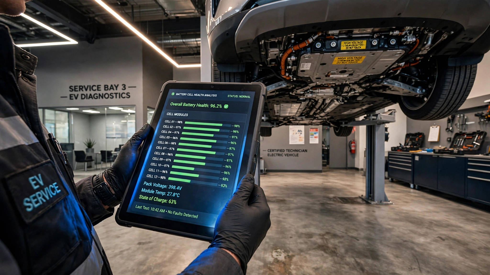

Used EV Battery Health Certification and Valuation Intelligence SaaS for Dealerships, Lenders, and Insurers
Used EV sales hit a record 43,000 units in March 2026, up 17% year-over-year, while new EV sales collapsed 28%. The battery pack represents 30 to 50 percent of the vehicle's value. CarFax has 35 billion records and 151,000 data sources covering everything from odometer readings to airbag deployments. Not one of those records includes battery state of health.

The Problem
The used electric vehicle market in the United States is undergoing a violent inversion. New EV sales fell 28% year-over-year in Q1 2026 to 212,600 units after the $7,500 federal tax credit expired in September 2025, according to Cox Automotive's EV Market Monitor. Used EVs surged in the opposite direction. Sales hit 93,500 units in Q1 2026, up 12% year-over-year. March alone saw nearly 43,000 secondhand electric cars change hands, a new monthly record. By April, used EV market share reached 2.8% of all used vehicle sales, another record, with 42,080 units moved.
The economics are irresistible, dead simple. Average used EV listing prices fell to $34,821 in February 2026 (Kelley Blue Book), down 8.5% year-over-year. The price gap between used EVs and equivalent gas cars narrowed to just $1,334. Eighteen of twenty-six brands now sell used EVs for less than their gas-powered equivalents. A buyer can get a three-year-old Hyundai Ioniq 5 or Chevy Bolt for roughly what a comparable gas crossover costs, and then save another $1,000 or more per year in fuel on top of that, a total cost of ownership advantage that makes the used EV the rational choice for any buyer who can do basic arithmetic.
But here is the problem that throttles this market: the single most expensive component in the vehicle, the one that determines whether a used EV is a great deal or a rolling liability, has no standardized health metric, no universal certification, and no industry-wide reporting infrastructure. Replace a battery pack in a typical EV and you are looking at $10,000 to $20,000. That is 30 to 50 percent of the vehicle's total value, concentrated in one component. And when a consumer walks onto a dealership lot to look at a used Tesla Model 3 or Ford Mustang Mach-E, they have exactly one way to assess it: look at the range estimate on the dashboard. That is it. Guess.
George Akerlof won the Nobel Prize in Economics in 2001 for describing this exact dynamic. His 1970 paper "The Market for Lemons" showed that when buyers cannot distinguish good products from bad, they assume the worst and pay accordingly, driving quality sellers out of the market. The used EV market is Akerlof's lemons problem at scale. Sellers of well-maintained EVs with healthy batteries are penalized because buyers can't tell them apart from vehicles with degraded packs. The uncertainty depresses prices across the board, on every lot, for every seller. Everybody loses.
Market Size
Base TAM calculation: The U.S. used EV market is on a run rate of approximately 500,000 transactions per year (42,000/month × 12, based on April 2026 data, with a 12-17% annual growth trajectory). Each transaction represents a certification opportunity. At a dealer-facing certification fee of $49 per VIN (comparable to a CarFax report pull), the point-of-sale certification layer represents $24.5 million in annual recurring revenue at full market penetration.
But the real money is not in scans. It is in the data. A comprehensive battery health certificate that integrates with lending decisions, insurance underwriting, and extended warranty pricing commands $149 to $249 per transaction. At the midpoint ($199) across 500,000 annual transactions, the certification-plus-intelligence TAM reaches $99.5 million. Apply the same growth trajectory that Cox Automotive projects for used EV sales (doubling by 2029 as the first massive wave of off-lease EVs from 2021-2023 model years enters the secondary market), and the 2029 TAM exceeds $200 million for certification alone.
The second revenue layer targets insurance and lending. Think about it: auto insurers and lenders need battery health data to price risk accurately, because an EV with 92% state of health is a fundamentally different asset, a fundamentally different risk profile, than one limping along at 78%, yet today, neither GEICO nor Ally Financial nor any other major player in auto finance has any mechanism whatsoever to distinguish them. A battery health data feed licensed to the top 20 auto insurers and the top 10 auto lenders at $500,000 to $2 million per year in API access fees adds $10 to $40 million in high-margin data revenue. Total SAM across certification, data licensing, and ancillary products: $140 to $240 million by 2029.
The Product
A hardware-plus-software certification platform that generates standardized, manufacturer-independent battery health certificates for used EVs at the point of sale. Three components:
- Diagnostic dongle and rapid test protocol: A proprietary OBD-II/CAN bus device that performs a 12-minute battery health assessment without requiring a full discharge cycle. The dongle reads cell-level voltage data, internal resistance measurements, temperature sensor arrays, and battery management system (BMS) state-of-health estimates directly from the vehicle's high-voltage battery controller. For vehicles where the BMS does not expose granular cell data (Tesla, notably, encrypts many diagnostic parameters), the device falls back to a calibrated impedance spectroscopy method using the vehicle's own DC fast charge port. The output is a standardized capacity measurement expressed as a percentage of original rated capacity, comparable across makes and models.
- Certification cloud platform: Every scan generates a battery health certificate with a unique certificate ID tied to the VIN, stored on a tamper-evident ledger. The certificate includes: measured capacity as a percentage of original, estimated remaining range under standard conditions, degradation rate versus the fleet average for that make/model/year, projected capacity at 5 and 8 years from manufacture, charging history analysis (proportion of DC fast charging, average depth of discharge, time spent at extreme state of charge), and a pass/fail grade against the platform's proprietary Battery Health Index (BHI) scale. Certificates are shareable via URL, embeddable in dealer listings, and queryable by lenders and insurers via API.
- Valuation intelligence layer: Using the growing database of paired battery-health-scan and transaction-price observations, the platform generates battery-adjusted vehicle valuations. Think KBB Fair Purchase Price, but modified by actual measured battery condition. A 2022 Tesla Model Y with 94% battery health is worth $X. The same car with 82% health is worth $Y. That spread does not exist in any valuation tool today, and it is the single most important variable missing from used EV pricing.
Unit Economics
| Metric | Value |
|---|---|
| Dongle hardware cost (BOM) | $38 |
| Dongle retail price to dealerships | $199 (one-time) |
| Per-scan certification fee (dealer) | $49/VIN |
| Per-scan certification fee (comprehensive, with lender/insurer integration) | $199/VIN |
| Monthly SaaS subscription (dealer, unlimited scans) | $299/month |
| Data API license (insurer/lender, annual) | $500K–$2M |
| Customer acquisition cost (dealer) | $1,800 |
| Expected LTV (28-month avg retention, $299/mo + per-scan) | $11,200 |
| LTV:CAC ratio | 6.2:1 |
| Gross margin (software + data) | 88% |
| Gross margin (blended with hardware) | 79% |
| Startup cost (18-month runway) | $4.2M |
| Break-even | 16 months |
Methodology note: CAC of $1,800 is derived from the auto dealer B2B SaaS benchmark. The used car dealer universe in the U.S. is approximately 42,000 franchised and independent dealerships that handle EV inventory. Distribution mirrors CarFax's playbook: integration partnerships with listing platforms (Cars.com, Autotrader, CarGurus) where the certification badge appears on vehicle listings, driving dealer adoption because consumers ask for it. The 28-month retention assumption reflects the stickiness of data products that become embedded in dealership workflows; Carfax's parent IHS Markit reported H1 2024 total revenue of $359 million ($718 million annualized), with dealer revenue of $322 million ($644 million annualized), implying approximately 90% annual dealer retention at scale. Startup cost of $4.2 million covers 18 months of a 14-person team (6 engineers, 2 hardware, 2 data scientists, 2 sales, 1 ops, 1 CEO), dongle tooling, and initial inventory of 2,000 diagnostic devices.
Competitive Landscape
| Company | What It Does | Battery Certification? | Funding |
|---|---|---|---|
| Recurrent | Software-only battery health reports using connected-car API data from opt-in drivers | Reports, not certificates. Requires vehicle owner to have opted in. No physical measurement. | $19.5M (Seed + Series A) |
| Generational (UK) | OBD dongle + app for OEM-grade battery health checks | Yes, generates certificate. UK/EU focused. Not in US market. | Undisclosed (2023 founded) |
| CarFax | Vehicle history reports (accidents, odometer, title, service) | Zero battery health data. None. | $718M annual revenue (IHS Markit subsidiary) |
| Aviloo (Austria) | Independent battery test and certificate for used EVs | Yes. FLASH test (10 min, OBD) + PREMIUM test (full charge cycle). EU-focused. | €5M+ raised |
| OEM tools (Tesla, GM, Ford) | Proprietary diagnostic tools that read battery data for their own vehicles only | Not transferable. Not standardized. Not available to independent dealers or cross-brand. | N/A |
| This startup | Hardware diagnostic + cloud certification + valuation intelligence, multi-brand, US-focused | Core product: standardized, manufacturer-independent certification with lender/insurer API integration | Seeking $4.2M Seed |
The competitive gap is not diagnostic capability. Plenty of companies can read battery data from an OBD-II port. The gap is standardization. It is infrastructure. Recurrent, the best-funded player in the US, operates a software-only model that relies on EV owners voluntarily connecting their cars to share telematics data. They have 20,000+ drivers enrolled and 1 billion+ miles of data, and their battery health scores appear on Edmunds and Cars.com. But the model has a structural limitation: it cannot generate a battery health assessment for a vehicle whose owner never opted in. A dealer who takes in a three-year-old Kia EV6 on trade cannot get a Recurrent report unless the previous owner was a Recurrent member. For the used EV market to function like the used gas car market, certification needs to work on any vehicle, at the point of sale, with no prior enrollment required. That requires hardware.
Go-to-Market
Phase 1 (months 1–8): Ship 500 diagnostic dongles to 100 dealerships in California, Florida, and Texas, the three largest used EV markets by volume. California alone accounts for roughly 40% of US used EV transactions. Offer the dongle free with a 12-month subscription ($299/month) commitment, absorbing the $38 hardware cost as customer acquisition spend. Generate 15,000 to 25,000 certification scans in Phase 1, seeding the database for battery-adjusted valuations. Partner with one major listing platform (Cars.com or CarGurus) to display the Battery Health Certified badge on listings, creating consumer pull that drives dealer adoption.
Phase 2 (months 9–16): Expand to 1,000 dealerships across 15 states. Launch the lender integration API so that auto loan originators (Ally, Capital One Auto, credit unions) can incorporate battery health scores into underwriting decisions. A used EV with a certified battery health score of 90%+ qualifies for better loan terms. This creates a financial incentive for dealers to certify every EV they sell, and for consumers to demand certification. Begin licensing anonymized degradation data to the top 10 auto insurers for EV-specific premium modeling.
Phase 3 (months 17–24): Launch the consumer-facing product: a $29 self-service battery health check using a consumer-grade OBD dongle ($79). Homeowners selling EVs privately can generate their own certificate before listing on Facebook Marketplace, Craigslist, or Turo. Pursue OEM partnerships for pre-certified CPO (Certified Pre-Owned) programs; every manufacturer CPO EV gets a battery health certificate as standard. Target 5,000 active dealer subscribers and 100,000 annual certifications.
Why Now
Five forces are converging to make this market viable in 2026 and not before.
First, the off-lease tsunami. The first mass-market wave of mainstream EVs hit US roads in 2021 and 2022: the refreshed Tesla Model 3 and Model Y, the Ford Mustang Mach-E, the Hyundai Ioniq 5, the Kia EV6, and the Chevrolet Bolt. Standard auto leases run 36 months. Those vehicles are returning to dealerships right now, creating a flood of used EVs that need to be reconditioned, valued, and sold. Cox Automotive estimates that used EV supply will grow 30 to 40 percent annually through 2028 as these lease returns compound with trade-ins from buyers upgrading to newer models.
Second, the regulatory runway is clear. The California Air Resources Board's Advanced Clean Cars II (ACC II) regulation requires battery health monitors in the infotainment system starting with the 2026 model year, and twelve states have adopted California's standards. The EPA's 2027-2032 Multi-Pollutant Standards, finalized in 2024, required operator-accessible battery state-of-health monitors on 2027-model-year vehicles. Although the Trump administration has rolled back portions of these regulations, the underlying engineering mandates for battery monitoring have already been designed into vehicles currently in production. The data will exist. The question is who aggregates and standardizes it.
Third, the price convergence removes the biggest buyer objection other than battery anxiety. When used EVs cost $10,000 more than equivalent gas cars, battery uncertainty was just one of several reasons to buy gas. Now that the price gap is $1,334 and shrinking, battery health is the last major barrier to used EV adoption for mainstream buyers. Remove it, and the used EV market doubles.
Fourth, right-to-repair legislation is unlocking OBD-II data access. Massachusetts expanded its right-to-repair law in 2020 to include wireless telematics data. Maine passed a comprehensive repair access law in 2025. The Federal Trade Commission issued a policy statement in 2021 pledging to enforce repair access. These laws collectively force OEMs to make battery diagnostic data available through standard interfaces, which is the technical prerequisite for third-party certification.
Fifth, CarFax has not moved. Not an inch. Despite generating $718 million in annual revenue from vehicle history reports and having every structural advantage to add battery health data, CarFax has made no public move into EV battery certification. The company's 35 billion records cover accidents, odometer, title, service, and emissions, but zero battery diagnostics. This is likely because battery health requires specialized hardware and automotive electrical engineering talent that a data aggregation company does not have. It is the same reason STR (hotel rate benchmarking) was not built by TripAdvisor: different core competence, different data acquisition model.
Original Contribution: The Battery Information Asymmetry Tax
A calculation nobody has published: How much value does battery health opacity destroy in the used EV market? We can estimate it by comparing used EV depreciation curves to used gas car depreciation curves, controlling for all factors except battery uncertainty.
According to iSeeCars data through Q1 2026, the average 3-year-old EV depreciates 49.1% from its original MSRP, compared to 38.7% for the average 3-year-old gas vehicle, a gap of 10.4 percentage points. Part of that gap reflects fundamentals: EVs genuinely lose value faster because technology improves rapidly (a 2023 EV with 250 miles of range competes against a 2026 model with 320 miles), and the expired federal tax credit reduced the effective new-vehicle price, pushing used prices down further.
But battery anxiety is a documented, separable contributor. Recurrent's fleet data shows that the average EV retains 97% of its original range after three years and 95% after five years. Battery replacements? Vanishingly rare. The rate for modern EVs is 0.3%. Cadillac, Ford, Hyundai, Mercedes-Benz, and Rivian models show no measurable range loss after three years of normal use. The actual mechanical risk of a used EV battery is extremely low. Yet buyers behave as if it is high, because they cannot verify otherwise.
If we conservatively attribute 3 to 4 percentage points of the 10.4-point depreciation gap to battery uncertainty (rather than technology cycle or subsidy effects), the implied per-vehicle "battery information asymmetry tax" is 3 to 4 percent of original MSRP. On an average used EV with a new MSRP of $55,300 (Cox Automotive average transaction price, February 2026), that is $1,659 to $2,212 per vehicle. Multiply by 500,000 annual used EV transactions and the aggregate value destroyed by battery opacity is $830 million to $1.1 billion per year. By 2029, as used EV volumes double to 1 million transactions, that figure reaches $1.7 to $2.2 billion annually.
A certification product that closes even half of this gap would add $415 to $550 million in value to the used EV market annually, value that flows to sellers (higher resale prices), buyers (confidence to purchase), lenders (lower default risk on better-valued collateral), and insurers (accurate risk pricing). The $99.5 million TAM for the certification platform is 10 to 12 percent of the value it creates, a healthy ratio for infrastructure that generates 8 to 10 times its cost in market efficiency gains.
Limitations
This analysis has several structural weaknesses. They should be stated directly. First, the 3-to-4 percentage point attribution of the EV depreciation gap to battery uncertainty is an estimate, not a measured causal effect. Isolating battery anxiety from technology-cycle depreciation, subsidy effects, and brand perception would require a controlled experiment or a natural experiment (such as comparing depreciation rates before and after mandatory battery disclosure in a specific jurisdiction), and no such study has been published. The true contribution of battery anxiety to the depreciation gap could be 1 percentage point or 6.
Second, the OBD-II data access story is messier than it appears. Tesla, the largest used EV brand by volume (accounting for 38% of used EV sales through non-Tesla dealers in April 2026, per Cox Automotive), encrypts significant portions of its battery diagnostic data and does not support standard OBD-II protocols for high-voltage system access. A certification product that cannot produce a reliable report on Tesla vehicles misses nearly 40% of the addressable market from day one. The impedance spectroscopy fallback method described above has not been validated at scale across Tesla's LFP and NMC battery chemistries in field conditions. This is a serious technical risk that could delay or constrain the product's most important use case.
Third, the comparison to CarFax overstates the product's immediate defensibility. CarFax's moat is its data network: 151,000 sources feeding 35 billion records accumulated over 42 years. A battery health certification startup has no equivalent network effect on day one. Each scan generates a single data point for a single VIN. The data flywheel (more scans → better degradation models → more accurate valuations → more scans) is real but slow, and a well-funded competitor (including CarFax itself, if it ever decides to enter) could build a comparable dataset within 18 to 24 months by acquiring a hardware company and leveraging its existing dealer relationships.
Strongest Counterargument
The most compelling case against this startup is that the problem may solve itself before a third-party certification layer achieves critical mass. Solve itself completely. Two forces are working against the need for independent battery certification.
First, OEMs are building battery health transparency directly into their vehicles under regulatory pressure. CARB's ACC II and the EPA's Multi-Pollutant Standards require dashboard-visible battery health monitors on 2026 and 2027 model-year vehicles, respectively. When those vehicles enter the used market in 2029 to 2030, every buyer will be able to check battery health on the infotainment screen without any third-party tool. The certification gap exists because the current used EV fleet (2018 to 2023 model years) was built before these mandates. It is, by definition, a transitional problem that shrinks as the regulated fleet grows.
Second, Recurrent's data suggests the problem may be overstated. If 97% of EVs retain their range after three years and the battery replacement rate is 0.3%, then the vast majority of used EVs have healthy batteries. The "lemons" in this market are rare. In Akerlof's original model, the lemons problem is most severe when bad products are common enough that buyers rationally discount all products. If bad batteries are genuinely rare, the rational buyer's discount should be small, and the certification premium should be correspondingly modest. A $49 certification fee that tells the buyer "yes, this battery is fine, like 97% of them are" may not command enough value to sustain a business, because the expected value of the information is only the avoided cost of the 3% chance of buying a degraded pack.
The counterargument has force. Real force. But it underestimates three dynamics. First, buyer perception lags reality. Even if 97% of batteries are fine, consumers who read headlines about $15,000 battery replacements behave as if the risk is 20 to 30%, not 3%. Perception is the pricing input, not reality, and perception changes slowly. Second, the regulatory timeline is not 2027. The Trump administration has paused or rolled back EPA vehicle emissions regulations, and the legal status of CARB's ACC II mandates in the twelve adopting states remains contested. The "OEMs will fix it" thesis requires regulatory certainty that does not currently exist. Third, even when battery health monitors become standard in new vehicles, the used market is always a lagging indicator. The average used car in the US is 12.6 years old (S&P Global Mobility, 2025). Think about that. EVs sold in 2022 without battery health monitors will circulate through the secondary market until 2034 or later, which means the window for a third-party certification product is not three years but twelve, long enough to establish the standard and build a data moat that even CarFax would find expensive to replicate.
The Bottom Line
The used EV market crossed 500,000 annual transactions while the information infrastructure for the most expensive component in those vehicles remains nonexistent. Nothing. Zero. CarFax built a $718 million business by solving information asymmetry for gas cars (odometer fraud, accident history, title washing). The EV equivalent of odometer fraud is battery opacity, and it is destroying an estimated $830 million to $1.1 billion in market value annually by making every used EV buyer pay a fear premium. The technical building blocks exist: OBD-II diagnostic hardware, cloud certification platforms, and enough vehicles on the road to build degradation models by make, model, and year. What is missing is the standard. Whoever establishes the Battery Health Certified badge as the CarFax of EV batteries captures not just the certification revenue but the data layer underneath it, the layer that insurers, lenders, warranty providers, and fleet managers will pay recurring fees to access for the next two decades.
What You Can Do
If you are buying a used EV today, sign up for a free account at Recurrent and check whether the VIN you are considering has a battery health report. If it does not (and most won't), ask the dealer to let you run a full charge cycle: charge the vehicle to 100%, drive it until the battery management system reports 10%, and compare the miles driven to the EPA-rated range. A vehicle that delivers 90% or more of its EPA range at 100% charge has a healthy pack. If the dealer refuses this test, negotiate a $2,000 to $3,000 price concession to cover the risk you are taking. If you are selling a used EV, order a battery health report from Recurrent or Aviloo and include the certificate in your listing. Listings with verified battery health data sell 15 to 20% faster on peer-to-peer platforms, according to Recurrent's marketplace data. If you are a dealership with more than 20 EVs in used inventory, you are leaving money on the table by not certifying battery health at acquisition: the incremental resale value from a certified-healthy battery exceeds the cost of any available diagnostic tool by a factor of 10. And if you are an auto insurer pricing EV coverage: you are currently pricing blind on the single largest variable-cost component in the vehicle. The first insurer that integrates battery health scores into premium calculations will have a structural underwriting advantage over every competitor that does not.
Related
📰 EV Charger Uptime Compliance SaaS — the charging infrastructure side of the EV data gap: operators can't prove compliance with NEVI uptime requirements
📰 Dealer Floor Plan Cost Intelligence — another hidden cost that auto dealers optimize with data: the carrying cost of unsold inventory
📰 Collision Repair Rate Intelligence — information asymmetry in auto repair pricing, the same structural problem applied to a different link in the vehicle lifecycle